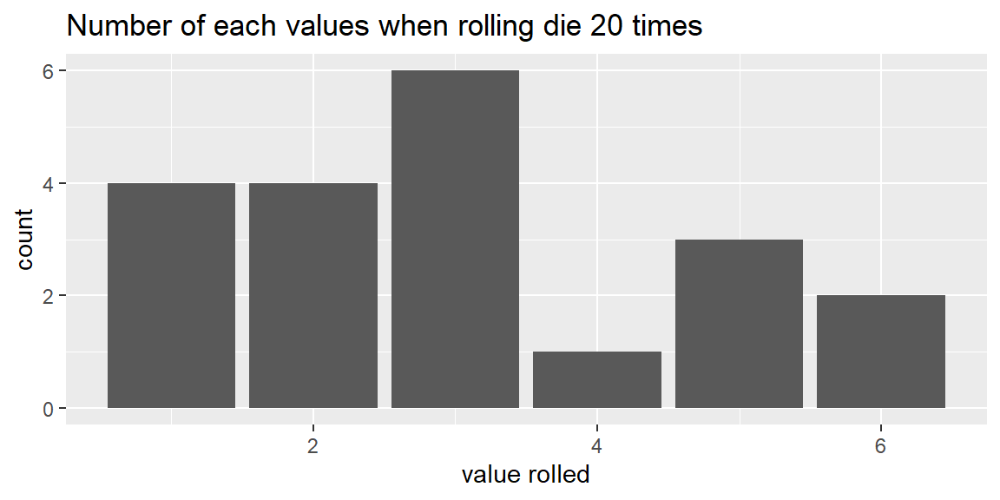
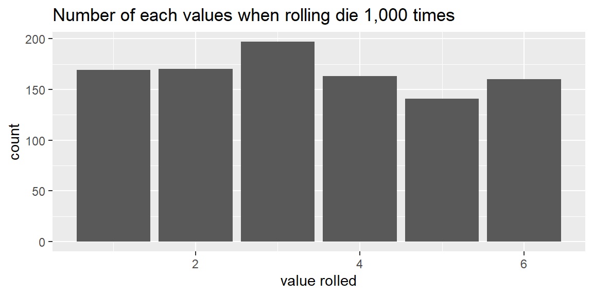
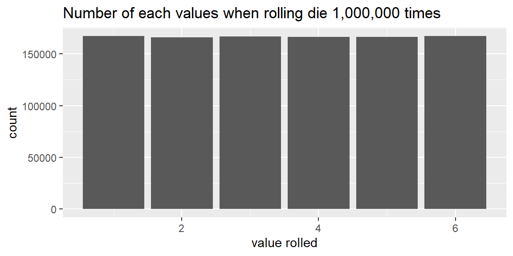
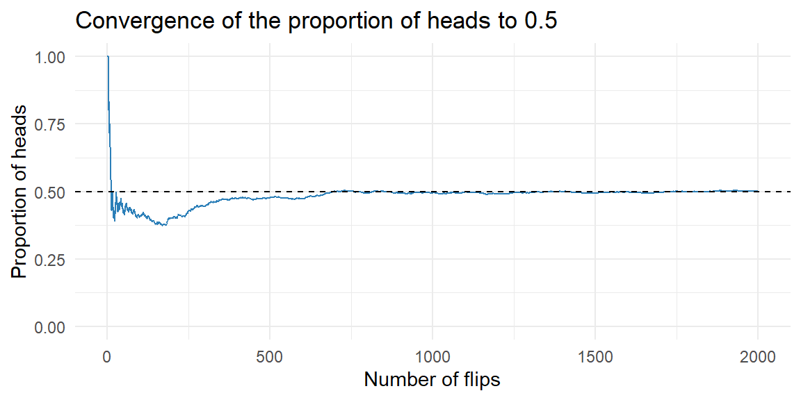

| 3 | 6 | 1 | 5 | 5 | 4 | 3 | 2 | 2 | 6 | 1 | 2 | 3 | 3 | 1 | 1 | 3 | 5 | 3 | 2 |
5 Probability Concepts
5.1 Basic Probability Rules
“The theory of probabilities is at bottom nothing but common sense reduced to calculus.” – Pierre‑Simon Laplace
Guiding question: What is probability, really?
When people say “there’s a 70 percent chance of rain” or that a team has “even odds” of winning, they’re using probability to express how likely an outcome seems. In statistics, we give that vague notion a precise meaning. A
A probability of 0 means the event can never happen, a probability of 1 means it is certain, and values in between describe varying degrees of likelihood.
Experiments, outcomes and sample spaces
Probability always starts with an
Flipping a coin, rolling a die or drawing a card are familiar examples. Each trial produces an outcome, and the set of all possible outcomes is called the
We often use \(S\) to denote the sample space. For instance, when you flip one fair coin, the sample space is \(S=\{\text{H},\text{T}\}\); when you roll a six‑sided die, \(S=\{1,2,3,4,5,6\}\).
It is essential to describe the sample space clearly because the probability of any event is computed relative to it. In practice, the sample space can be finite (like the faces of a die) or infinite (like all possible real‑valued measurements of temperature). Identifying \(S\) helps us keep track of what outcomes are possible before we assign probabilities.
Events and interpretations of probability
An
Let \(A\) be the event that a die roll is even. Then \(A=\{2,4,6\}\), which contains three outcomes from the sample space \(S=\{1,2,3,4,5,6\}\).
The probability of an event \(A\), written
When the outcomes in \(S\) are equally likely (as with a fair die or fair coin), the classical probability of \(A\) is
\[ P(A) = \frac{\text{number of outcomes in }A}{\text{number of outcomes in }S}\,. \]
In the die example above, there are three even numbers out of six, so \(P(A)=3/6=0.5\). This agrees with our intuition that even and odd numbers are equally likely on a fair die.
Probability has several interpretations. In the frequentist view, \(P(A)\) is the long‑run relative frequency of \(A\)—the fraction of times \(A\) occurs if we repeat the experiment many times under identical conditions. For example, the probability of flipping a head on a fair coin is 0.5 because, in the long run, about half of the flips will show heads.
Example: rolling a six-sided die
Suppose we rolled a six-sided die 20 times. Using the idea of equally likely outcomes, the probability of rolling a six is \[ \begin{align} P(6)=&\frac{1}{6}\\ \approx& 0.167 \end{align} \] Let’s see how many times we get a six when rolling the die 20 times.
We see that we rolled a six 2 out of the 20 times. The relative frequency is thus \[ \frac{\text{number of sixes}}{\text{number of rolls}}=\frac{2}{20}=0.1 \]
Let’s look at a bar chart for all of the rolls:

Let’s now roll the die 1,000 times:

The number of times we rolled each value is a little more even. Focusing only on six, we have \[ \frac{\text{number of sixes}}{\text{number of rolls}}=\frac{160}{1000}=0.16 \] which is close to the theoretical proportion of \(1/6\approx 0.167\)
We can keep increasing the number of times we roll the die and we will see the number of each value “even out” across all values:

Each value will converge to the theoretical value of \(1/6\).
Example: Flipping a coin
Suppose we flip a coin many times and track the proportion of heads over time. Early on, the proportion jumps around; as the number of flips grows, it tends to settle near the true probability of 0.5.

Law of Large Numbers
In 1689, the Swiss mathematician Jacob Bernoulli proved that as the number of trials increases, the proportion of occurrences of any given outcome approaches a particular number (such as 1/6 or 1/2) in the long run.
To show this, he assumed that the outcome of any one trial does not depend on the outcome of any other trial. Bernoulli’s result is known as the
We will interpret the probability of an outcome to represent long-run results. This is the frequentist approach to probability.
Frequentist and Subjective probability
Probability can be defined in different ways:
- Frequentist (long‑run relative frequency). For repeatable experiments, \(P(A)\) is the limit of the proportion of times \(A\) occurs in a large number of trials.
- Subjective. Probability reflects a personal belief based on available information; two people may assign different probabilities to the same event.
No matter how you interpret it, probability values lie between 0 and 1 and follow certain algebraic rules.
Complements and the complement rule
If \(A\) is an event, the
\[ P(A^c) = 1 - P(A) \]
The complement rule is especially handy for “at least one” problems. Suppose you toss a fair coin three times and want the probability of getting at least one head. Let \(A\) be the event “at least one head” and \(A^c\) be “no heads” (all tails). There are eight possible equally likely outcomes in the sample space \[ S=\left\{HHH, HHT, HTH, HTT, THH, THT, TTH, TTT\right\} \]
There is only one outcome with no heads—TTT—so \(P(A^c)=1/8\).
By the complement rule, \(P(A)=1-1/8=7/8\).
Unions, intersections and the addition rule
When you combine events, you need to think about unions and intersections. The
The
\[ P(A\cup B) = P(A) + P(B) - P(A\cap B)\,. \]
Example: Additive rule
Imagine a survey of 200 students about their beverage preferences:
- 120 students like coffee.
- 90 students like tea.
- 60 students like both coffee and tea.
Define event \(C\) = “student likes coffee” and event \(T\) = “student likes tea.” Then
- \(P(C) = 120/200 = 0.60\)
- \(P(T) = 90/200 = 0.45\)
- \(P(C\cap T) = 60/200 = 0.30\)
The probability that a randomly chosen student likes either coffee or tea (or both) is
\[ \begin{align*} P(C\cup T) =& P(C) + P(T) - P(C\cap T)\\ =& 0.60 + 0.45 - 0.30\\ =& 0.75 \end{align*} \]
So 75% of students like at least one of the two beverages.
Notice that this formula counts how many like coffee (\(P(C)\)). Then it adds how many like tea (\(P(T)\)). When these two are added together, the students who like both coffee and tea are added twice: once in \(P(C)\) and again in \(P(T)\). Therefore, those students must be subtracted off one time. That is why we subtract off the intersection \(P(C\cap T)\).
Mutually Exlcusive
If \(A\) and \(B\) are
Example: Hospital patients
Hospital records show that 12% of all patients are admitted for surgical treatment, 16% are admitted for obstetrics, and 2% receive both obstetrics and surgical treatment.
If a new patient is admitted to the hospital, what is the probability that the patient will be admitted for surgery, for obstetrics, or for both?
Let \(A=\{\text{A patient admitted to the hospital receives surgical treatment.}\}\)
and \(B=\{\text{A patient admitted to the hospital receives obstetrics treatment.}\}\)
We have \[ P(A) = 0.12\qquad P(B) = 0.16\qquad P(A\cap B) = 0.02 \] Since some patients receives both surgical and obstetrics treatments, these events are not mutually exclusive. The general addition rule gives
\[ \begin{align*} P(A\cup B) &= P(A) + P(B) -P(A\cap B) \\ & = 0.12+.016-.02\\ & = 0.26 \end{align*} \]
Thus, 26% of all patients admitted to the hospital receive either surgical treatment, obstetrics treatment, or both.
Probility from contingency tables
Given a contingency table where the data is displayed by two categorical variables, we can estimate the probabilities by using the frequencies in the cells.
The table below involves diagnosing pulmonary embolism (PE) using a D‑dimer blood test. In a group of 10,000 patients suspected of PE, a perfusion scan was used as the gold‑standard diagnostic. Of the 1000 individuals who actually had PE, the D‑dimer test was positive in 700 cases (and negative in 300); of the 9000 individuals without PE, the test was negative in 7700 cases (and positive in 1300). Thus 2000 people had a positive D‑dimer test result, but only 700 of them truly had PE.
| Pulmonary‐embolism status | D‑dimer positive | D‑dimer negative | Total |
|---|---|---|---|
| Pulmonary embolism present | 700 | 300 | 1000 |
| Pulmonary embolism absent | 1300 | 7700 | 9000 |
| Total | 2000 | 8000 | 10000 |
We can estimate probabilities by taking the frequencies in the cells and dividing by the total number of patients (10,000). For example, the probability that a patient had a pulmonary embolism is \[ P(PE)=\frac{1000}{10000}=0.1 \]
The probability that a patient pas a pulmonary embolism and is D-dimer positive is \[ P(PE\cap \text{D-dimer positive})=\frac{700}{10000}=0.07 \]
For an union, we can apply the additive rule. For example, the probaility that a patient has a pulmonary embolism or has a D-dimer positive result is \[ \begin{align*} P(PE\cup \text{D-dimer positive})=&P(PE)+P(\text{D-dimer positive})-P(PE\cap \text{D-dimer positive})\\ =&\frac{1000}{10000}+\frac{2000}{10000}-\frac{700}{10000}\\ =&\frac{2300}{10000}\\ =& 0.23 \end{align*} \]
Working in JMP Pro 17
Although this book emphasizes concepts, it’s worth noting how you can explore probability in JMP. The Distribution Calculator (under Help → Probability Calculator) lets you compute probabilities and quantiles for many distributions without writing formulas. For custom experiments like coin tosses or die rolls, you can simulate data by adding a column of random values: use Rows → Add Rows to create the desired number of trials, add a column with a formula such as Random Integer(1,6) for die rolls, and then use Analyze → Distribution to summarise the results. This empirical approach reinforces the frequentist idea that probabilities emerge from long‑run relative frequencies.
Recap
| Keyword | Definition |
|---|---|
| Probability | A number between 0 and 1 measuring how likely an event is to occur. |
| Experiment | A repeatable process with uncertain outcome (e.g., flipping a coin, rolling a die). |
| Outcome | A single possible result of an experiment; elements of the sample space. |
| Sample space | The set of all possible outcomes of an experiment. |
| Event | A subset of the sample space; may include one or many outcomes. |
| Frequentist interpretation | Defines probability as the long‑run relative frequency of an event in repeated trial. |
Check your understanding
Describe the parts of a probability model. In your own words, explain the difference between an outcome, an event and a sample space. Use the experiment of rolling a six‑sided die as an example.
Equally likely probability. If you roll a fair die, what is the probability of getting a number greater than 4? Explain how you arrive at your answer.
Complement rule in practice. You toss a fair coin four times. What is the probability of getting at least one tail? Use the complement rule to find the answer.
Solutions
Parts of a probability model. A sample space is the set of all possible outcomes—for a six‑sided die, \(S=\{1,2,3,4,5,6\}\). An outcome is one specific element of \(S\), such as rolling a 4. An event is any subset of \(S\); it might contain one outcome (e.g., \(\{6\}\), “rolling a six”) or several (e.g., \(\{2,4,6\}\), “rolling an even number”). We assign probabilities to events based on the rules discussed above.
Probability of a number greater than 4. The event \(A\) of rolling greater than 4 corresponds to outcomes \(\{5,6\}\). There are two favorable outcomes and six outcomes in total, so by the equally likely events \(P(A)=2/6=1/3\).
At least one tail in four tosses. Let \(A\) be “at least one tail.” The complement \(A^c\) is “no tails,” which means getting all heads (HHHH). Since the probability of all heads is \((1/2)^4=1/16\), the complement rule gives \(P(A)=1-1/16=15/16\).
5.2 Conditional Probability and Independence
“Is it probable that probability brings certainty?” – Blaise Pascal
Guiding question: What does it mean for events to be independent?
Our earlier discussion focused on single events and how to combine them using unions and complements. In many situations, we want to know the probability of an event given that another has already occurred. Thinking this way is essential when events are not isolated but are part of a process or sequence. For example, the probability that a randomly selected person is left‑handed might be different once you know the person is an artist. This leads us to the idea of conditional probability.
Conditional probability
If \(A\) and \(B\) are events with \(P(A)>0\), the
You can read \(P(B|A)\) as “the probability of \(B\) given \(A\).”
Rearranging the conditional probability formula yields the multiplication rule for any two events \(A\) and \(B\): \[ \begin{align*} P(A\cap B) =& P(A)\,P(B\mid A)\\ =& P(B)\,P(A\mid B) \end{align*} \] This rule tells us how to find the probability that both events occur: multiply the probability of the first event by the conditional probability of the second event given the first.
Example: smoking and cancer
Many medical researchers have conducted experiments to examine the relationship between cigarette smoking and cancer.
Consider an individual randomly selected from an adult male population.
Let \(A\) represent the event that the individual smokes, and let \(A^c\) denote the complement of \(A\) (the event that the individual does not smoke).
Similarly, let \(B\) represent the event that the individual develops cancer, and let \(B^c\) be the complement of that event.
Suppose a large sample from the population resulted in the proportions below:
| \(B\) | \(B^{c}\) | |
|---|---|---|
| \(A\) | .05 | .20 |
| \(A^{c}\) | .03 | .72 |
Use these probabilities to examine the relationship between smoking and cancer.
First, find the probability that an individual smokes: \[ \begin{align*} P(A) =& {P(A\cap B)+P(A\cap B^c)}\\ =& {0.05+0.20}\\ =& {0.25} \end{align*} \]
Now find the probability that an individual doesn’t smoke: \[ \begin{align*} P(A^c) =& {P(A^c\cap B)+P(A^c\cap B^c)}\\ =& {0.03+0.72}\\ =& {0.75} \end{align*} \]
Let’s now determine the probability that an individual develops cancer given they are a smoker: \[ \begin{align*} P(B\mid A) =& \frac{P(A\cap B)}{P(A)}\\ =& \frac{0.05}{0.25}\\ =& 0.2 \end{align*} \]
Let’s now determine the probability that an individual develops cancer given they are a smoker: \[ \begin{align*} P(B\mid A^c) =& \frac{P(A^c\cap B)}{P(A^c)}\\ =& \frac{0.03}{0.75}\\ =& 0.04 \end{align*} \]
Independent and dependent events
When the occurrence of one event does not change the probability of another, we call the events independent.
Formally, \(A\) and \(B\) are
For independent events, the multiplication rule simplifies to \[
P(A\cap B)=P(A)\,P(B)
\] If knowing that \(A\) has occurred does change the probability of \(B\), the events are called
Example: flipping coins
Think about tossing a fair coin twice. Let \(H_1\) be the event “the first toss is heads” and \(H_2\) be “the second toss is heads.” The probability of a head on each toss is 0.5, and the outcome of the first toss does not affect the outcome of the second. Therefore, \(P(H_2\mid H_1)=P(H_2)=0.5\), and the events are independent. Using the multiplication rule, \[ P(H_1\cap H_2) = P(H_1)\,P(H_2) = 0.5\times0.5 = 0.25\ \]
Example: sampling without replacement
Independence can break down when we sample from a finite population without replacement. Suppose a box contains 10 batteries, 4 of which are defective. You draw two batteries at random without replacement. Let \(D_1\) be the event “the first battery is defective” and \(D_2\) be “the second battery is defective.” The probability the first battery is defective is \(P(D_1)=4/10=0.4\). If the first battery is defective, there are now 3 defectives among 9 remaining batteries, so \(P(D_2\mid D_1)=3/9=0.333\). If the first battery is good, there are still 4 defectives among 9 batteries, so \(P(D_2\mid D_1^c)=4/9\approx0.444\). Because \(P(D_2)\) depends on whether \(D_1\) happened, the events are dependent. When we sample with replacement, the draws are independent, since after each draw the composition of the box resets to 4 defectives out of 10.
In practice, when the sample size is much smaller than the population, the difference between sampling with and without replacement becomes negligible and we can treat the draws as independent.
Mutually Exclusive Events versus Independent Events
There is often confusion between the concepts of independent events and disjoint events.
Actually, these are quite different notions, and perhaps this is seen best by comparisons involving conditional probabilities.
Specifically, if \(A\) and \(B\) are mutually exclusive, then \[ P(A \cap B) = 0 \] whereas for independent events, we have \[ P(A \cap B) = P(A) P(B) \]
If \(P(A)>0\) and \(P(B)>0\), then how can \[ P(A) P(B) = 0 ? \] This is impossible.
In other words, the property of being mutually exclusive involves a very strong form of dependence, because the occurrence of one event mean the other event cannot occur.
Thus, if two events are mutually exclusive, they cannot be independent.
If two events are independent, they cannot be mutually exclusive.
Conditional probability from contingency table
Let’s go back to the pulmonary embolism example from last section.
Here is the table again:
| Pulmonary‐embolism status | D‑dimer positive | D‑dimer negative | Total |
|---|---|---|---|
| Pulmonary embolism present | 700 | 300 | 1000 |
| Pulmonary embolism absent | 1300 | 7700 | 9000 |
| Total | 2000 | 8000 | 10000 |
Suppose we wanted to estimate the probability of a pulmonary embolism given the patient had a D-dimer positive result. When looking for conditional probability from a contingency table, remember that the conditioned event is all we are focusing on . In this case, the conditioned event is D-dimer positive. There are a total of 2000 patients that are D-dimer positive. Of those 2000 patients, 700 had a pulmonary embolism. Thus, the conditional probability is
\[ P(PE\mid \text{D-dimer positive})=\frac{700}{2000}=0.35 \]
Working in JMP Pro 17
JMP makes it easy to explore conditional probabilities and independence using contingency tables. Enter your data with one column for each categorical variable (for example, “Major” and “Year”). Under Analyze → Fit Y by X, choose one variable as the response and the other as the explanatory factor. The resulting mosaic or contingency table will show joint counts. Right‑click and choose Row Percents or Column Percents to view conditional proportions. If the row percentages are the same across all columns (and vice versa), the variables are approximately independent; if the percentages differ, there is evidence of dependence.
Recap
| Keyword | Definition |
|---|---|
| Conditional probability | The probability of one event given that another event has occurred; computed as \(P(B\mid A)=P(A\cap B)/P(A)\) when \(P(A)>0\). |
| Multiplication rule | A rule that expresses the joint probability of two events: \(P(A\cap B)=P(A)\,P(B\mid A)=P(B)\,P(A\mid B)\). |
| Independent events | Events \(A\) and \(B\) for which \(P(B\mid A)=P(B)\) (equivalently \(P(A\mid B)=P(A)\)) and \(P(A\cap B)=P(A)P(B)\). |
Check your understanding
Calculus and statistics courses. At a certain college, 40% of students have taken calculus, 30% have taken statistics, and 15% have taken both.
- What is the probability that a student has taken statistics given they have taken calculus?
- Are taking calculus and statistics independent events? Explain your reasoning.
- What is the probability that a student has taken statistics given they have taken calculus?
Drawing marbles without replacement. A jar contains 5 red marbles and 3 green marbles. You draw two marbles at random without replacement.
- What is the probability that both marbles are red?
- If you draw with replacement, what would be the probability of drawing two red marbles?
- Which scenario involves independent events?
- What is the probability that both marbles are red?
Pass rates. In a school, 60% of students pass mathematics, 50% pass physics, and 35% pass both subjects.
- What is \(P(\text{Physics} \mid \text{Math})\)?
- Are passing mathematics and passing physics independent? Why or why not?
- What is \(P(\text{Physics} \mid \text{Math})\)?
Solutions
- Calculus and statistics.
- The conditional probability that a student has taken statistics given they have taken calculus is \(P(\text{Stats}\mid \text{Calc}) = P(\text{Stats}\cap \text{Calc}) / P(\text{Calc}) = 0.15/0.40 = 0.375\).
- If calculus and statistics were independent, we would have \(P(\text{Stats}\cap \text{Calc}) = P(\text{Stats})\,P(\text{Calc}) = 0.30\times0.40 = 0.12\). Because the actual joint probability 0.15 is greater than 0.12, these events are not independent; students who take calculus are more likely to take statistics.
- The conditional probability that a student has taken statistics given they have taken calculus is \(P(\text{Stats}\mid \text{Calc}) = P(\text{Stats}\cap \text{Calc}) / P(\text{Calc}) = 0.15/0.40 = 0.375\).
- Drawing marbles.
- Without replacement, the probability both marbles are red is \(P(\text{first red})\times P(\text{second red}\mid \text{first red}) = (5/8)\times (4/7) = 20/56 \approx 0.357\).
- With replacement, the probability stays \((5/8)\times (5/8) = 25/64 \approx 0.391\) because the composition of the jar is reset after each draw.
- Drawing with replacement yields independent events. Without replacement the draws are dependent, since the first draw changes the composition for the second.
- Without replacement, the probability both marbles are red is \(P(\text{first red})\times P(\text{second red}\mid \text{first red}) = (5/8)\times (4/7) = 20/56 \approx 0.357\).
- Pass rates.
- The conditional probability that a student passes physics given they pass mathematics is \(P(\text{Physics}\mid \text{Math}) = 0.35/0.60 \approx 0.583\).
- For independence we would need \(P(\text{Physics}\mid \text{Math}) = P(\text{Physics}) = 0.50\). Because \(0.583\ne 0.50\), passing mathematics and passing physics are not independent; students who pass one subject are more likely to pass the other.
- The conditional probability that a student passes physics given they pass mathematics is \(P(\text{Physics}\mid \text{Math}) = 0.35/0.60 \approx 0.583\).
5.3 Bayes Rule
“Absence of evidence is not evidence of absence.” – Carl Sagan
Guiding question: How can we use probability to assess diagnostic tests?
When you receive a lab report or a rapid test result it is tempting to take the outcome at face value: a positive means you have the disease; a negative means you do not. In reality, every diagnostic test has some chance of making mistakes. To interpret a result responsibly we need to take two things into account:
- The accuracy of the test itself. How often does it correctly flag someone who is sick? How often does it incorrectly flag someone who is healthy? These properties are captured by
sensitivity andspecificity . - The prevalence of the condition. How common is the disease in the population you are testing? This is the prior probability that a random person is infected before considering the test result.
\[ P(A\mid B) = \frac{P(B\mid A)\,P(A)}{P(B)}. \]
In diagnostic testing we let \(A\) be the event “person has the disease” and \(B\) be “test is positive.” Then:
- \(P(A)\) is the prevalence of the disease (our prior belief). This is usually known or estimated by epidemiologists.
- \(P(B\mid A)\) is the sensitivity: the probability the test correctly labels a diseased person as positive. This value is estimated in a clinical setting.
- \(P(B\mid A^c)\) is the false–positive rate, which is \(1\) minus the specificity. Also estimated in a clinical setting.
- \(P(A\mid B)\) is the quantity we really want: the probability a person is truly sick given they test positive. This is called the
positive predictive value (PPV) of the test.
Notice that Bayes’ Rule also works for a negative result. If \(T^c\) denotes a negative test, the probability of being healthy given a negative result, \(P(A^c\mid T^c)\), is the
Understanding Bayes’ Rule through an example
To see how Bayes’ Rule plays out, imagine a disease that affects 1% of the population. A new screening test has 90% sensitivity and 95% specificity. In plain language:
- If you have the disease, there is a 90% chance the test is positive (and a 10% chance of a false negative).
- If you do not have the disease, there is a 95% chance the test is negative (and a 5% chance of a false positive).
Suppose you go to the clinic and your test comes back positive. What is the probability you actually have the disease? Let \(D\) be “has the disease” and \(T\) be “test is positive.” We can use the conditional probability rule:
\[ P(D\mid T)=\frac{P(T\cap D)}{P(T)} \] Unfortunately, we do not know \(P(T\cap D)\) or \(P(T)\). All we know is
- \(P(T\mid D)\), which is the sensitivity
- \(P(T^c\mid D^c)\) which is the specificity. Sometimes we have instead the complement of specificity \(P(T\mid D^c)\).
- \(P(D)\) which is the prevalence.
In terms of our example, we have
- \(P(T\mid D)=0.90\)
- \(P(T^c\mid D^c)=0.95\) which implies \(P(T \mid D^c)=1-P(T^c\mid D^c)=0.05\)
- \(P(D)=0.01\)
In the numerator above, we can use the multiplicative rule to find \(P(T\cap D)\): \[ P(T\cap D)=P(T\mid D)\,P(D) \] In the denominator, we can write \[ P(T) = P(T\cap D) + P(T\cap D^c) \] Now, let’s apply the multiplicative rule to both of these intersections using the information that we do know: \[ P(T) = P(T\mid D)\,P(D) + P(T\mid D^c)\,P(D^c) \]
Let’s put everything together to give us a formula that has quantities we do know: \[ P(D\mid T)=\frac{P(T\mid D)\,P(D)}{P(T\mid D)\,P(D) + P(T\mid D^c)\,P(D^c)} \]
This equation is known as
Substituting our known values into the equation gives us \[ \begin{align*} P(D\mid T)=&\frac{P(T\mid D)\,P(D)}{P(T\mid D)\,P(D) + P(T\mid D^c)\,P(D^c)}\\ =&\frac{(0.90)(0.01)}{(0.90)(0.01) + (0.05)(0.99)}\\ =&0.1538 \end{align*} \]
Even though the test is fairly accurate, a *positive** result only raises the probability of disease to about 0.1538. The reason is that the disease is so rare that most positive tests are false alarms.
A genetic screening example in biology
Bayesian thinking is not confined to clinical medicine. Geneticists often screen organisms for rare traits. Imagine a plant species in which 5% of individuals carry a gene conferring resistance to a particular fungus. A DNA test has 90% sensitivity and 80% specificity. If a randomly selected plant tests positive, how likely is it to possess the resistance gene?
Let \(R\) be “has the resistance gene” and \(T\) be “test positive.” Then \(P(R)=0.05\), \(P(T\mid R)=0.90\) and \(P(T\mid R^c)=0.20\) (since specificity is 80%). Bayes’ Rule tells us
\[ P(R\mid T) = \frac{0.90\times 0.05}{0.90\times 0.05 + 0.20\times 0.95} \approx 0.191. \]
So even a positive test only implies about a 19% chance of carrying the gene. The key message is the same: when a condition is rare, false positives can overwhelm true positives, and Bayes’ Rule quantifies how evidence updates our beliefs.
Working in JMP Pro 17
JMP does not have a dedicated “Bayes’ Rule” button, but you can apply the rule by constructing a contingency table and computing appropriate proportions. To explore the medicine example above in JMP:
- Create a table with one column for the true condition (Diseased vs Healthy) and one column for the test result (Positive vs Negative). Enter the counts from the confusion matrix (for example, 90 true positives, 495 false positives, 9 405 true negatives and 10 false negatives per 10 000 screened).
- Choose Analyze → Fit Y by X and assign True condition to the Y role and Test result to the X role. The resulting contingency table shows the joint counts. Right‑click on the table and select Row Percents or Column Percents to view conditional probabilities.
- You can then compute the PPV as the percentage in the Diseased row of the Positive column divided by the total percentage in the Positive column, and the NPV as the percentage in the Healthy row of the Negative column divided by the total percentage in the Negative column.
These steps replicate the Bayes’ Rule calculation without writing formulas. JMP’s probability calculators can also be used for more complex Bayesian analyses in later chapters.
Recap
| Keyword/Concept | Definition/Meaning |
|---|---|
| Bayes’ Rule | Formula to update probabilities in light of new evidence |
| Sensitivity | Probability that a diagnostic test correctly identifies a diseased individual as positive; a high sensitivity means few false negatives. |
| Specificity | Probability that a diagnostic test correctly identifies a healthy individual as negative; a high specificity means few false positives. |
| Positive predictive value | The probability that a person actually has the condition given a positive test result, \(P(D\mid T)\); depends on sensitivity, specificity and the disease prevalence. |
| Negative predictive value | The probability that a person is disease‑free given a negative test result, \(P(D^c\mid T^c)\); often high when the disease is rare and the test has good sensitivity. |
| Prevalence | The proportion of individuals in the population who truly have the disease before any testing; the prior belief in Bayes’ Rule. |
Check your understanding
Interpreting a positive screening result. Suppose 2% of a population has a certain virus. A test for the virus has 95% sensitivity and 90% specificity.
- Using Bayes’ Rule, compute the probability that a randomly selected person actually has the virus given they test positive.
- What is the probability that a person who tests negative is truly virus‑free?
Understanding predictive values. A small genetic screening test for a mutation has 80% sensitivity and 97% specificity. In the population being tested, 0.5% carry the mutation. Explain why the positive predictive value of this test is quite low, despite its high specificity. How would the predictive value change if the prevalence were higher?
Designing a screening program. A veterinary lab develops a new blood test for heartworm disease in dogs. Preliminary studies estimate the prevalence of heartworm in the region at 3%, and the test’s sensitivity and specificity are 92% and 94%, respectively. Explain how you would use Bayes’ Rule to decide whether a positive test result warrants immediate treatment or should be confirmed with a second test. What role does the disease prevalence play in your decision?
Solutions
Interpreting a positive screening result.
- Let \(D\) be “has the virus” and \(T\) be “test positive.” We are given \(P(D)=0.02\), \(P(T\mid D)=0.95\) and \(P(T\mid D^c)=0.10\) (because specificity 90% implies a 10% false‑positive rate). First compute \(P(T)=0.95\times0.02 + 0.10\times0.98=0.019 + 0.098=0.117\). Then \[P(D\mid T)=\frac{0.95\times0.02}{0.117}\approx0.162.\] So even with good sensitivity and decent specificity, a positive result only implies about a 16% chance of infection when prevalence is 2%.
- For a negative result we look at the NPV. The probability of being virus‑free given a negative test is \[P(D^c\mid T^c)=\frac{P(T^c\mid D^c)\,P(D^c)}{P(T^c)}.\] Here \(P(T^c\mid D^c)=0.90\) (the specificity) and \(P(T^c\mid D)=1-0.95=0.05\). Compute \(P(T^c)=0.05\times0.02 + 0.90\times0.98 = 0.019 + 0.882=0.901\). Then \[P(D^c\mid T^c)=\frac{0.90\times0.98}{0.901}\approx0.979.\] Thus, a negative test is highly reassuring: about 98% of negatives are true negatives.
Understanding predictive values. With sensitivity 80%, specificity 97% and prevalence 0.5%, we have \(P(D)=0.005\), \(P(T\mid D)=0.80\) and \(P(T\mid D^c)=0.03\). Using Bayes’ Rule, \[P(D\mid T)=\frac{0.80\times0.005}{0.80\times0.005 + 0.03\times0.995} \approx 0.118.\] So only about 12% of positive results reflect true mutation carriers. The test is quite specific, but the condition is extremely rare, so the few false positives swamp the handful of true positives. If the prevalence were higher—say 5%—the same calculation would yield \[P(D\mid T)=\frac{0.80\times0.05}{0.80\times0.05 + 0.03\times0.95} \approx 0.585,\] meaning a positive result would be far more convincing. The predictive value increases with prevalence.
Designing a screening program. Let \(H\) be “has heartworm” and \(T\) be “test positive.” We are given \(P(H)=0.03\), \(P(T\mid H)=0.92\) and \(P(T\mid H^c)=0.06\) (since specificity 94% means a 6% false‑positive rate). Bayes’ Rule tells us \[P(H\mid T)=\frac{0.92\times0.03}{0.92\times0.03 + 0.06\times0.97} \approx 0.32.\] A single positive test thus implies roughly a 32% chance of heartworm. Whether that warrants immediate treatment depends on the risks and costs of treating a false positive versus missing a true case. Because the prevalence is relatively low and the PPV modest, many veterinarians would confirm a positive with a second, more specific test or use a confirmatory diagnostic (like an antigen test or imaging). If the disease were more common in the region (higher prevalence), the PPV would rise and clinicians might opt to treat after one positive result. Bayes’ Rule helps quantify this trade‑off: as prevalence increases, positive tests become more trustworthy.